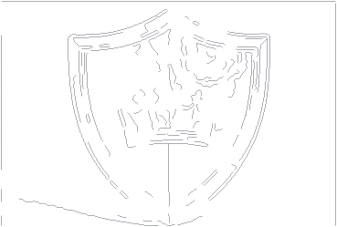
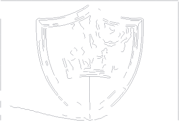
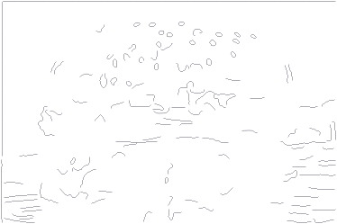
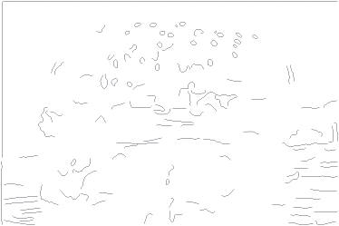
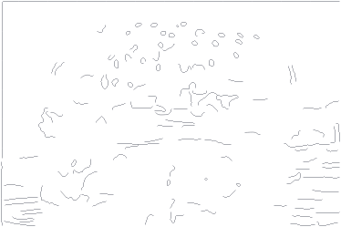
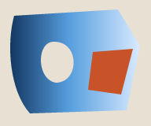
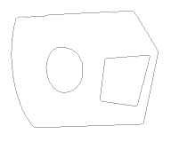

Geometry tool-controller proof of concept Geometry NOT_ACCEPTED · Architecture NOT_APPROVED
Real Groq inference: NOT_TESTED. No API requests or image uploads. B is deterministic; M is a fixed mock, NOT AI. Current account free-tier, quota and billing state are unverified. No AI result is represented by these SVGs.
Actual seven-case A/B/M comparison. A=automatic P; B=full-frame tool controller; M=fixed top/bottom plan. Both use12calls/2commits, same tools. Tiny support gains do not complete crown, Burger, Arabic or regions. C remains unavailable until verified free-only access and image permission.
A01_shield Source raster A saved automatic P 
B deterministic tools 
M FIXED MOCK — NOT AI Actual vector files: A SVG · B SVG · M SVG · deterministic mock replay
C Groq-guided result: NOT_TESTED. No image shown as a substitute.
Control Paths/cubics Source support proxy Known/proxy recall Atomic faces Tiny cubic length fraction A 128/1122 0.5459 No exact truth 0 0.2777 B 132/1135 0.5500 No exact truth 0 0.2796 M 132/1136 0.5501 No exact truth 0 0.2792
Source trace support includes texture/reflections; it is not structural precision. Atomic faces are evaluator diagnostics, not reconstructed semantic objects. Arabic uses threshold proxies; Shield guides have1.2–2px uncertainty.
Crown, ornament, tips and lower band Crown guide recall A0.3036 / B0.3082 / M0.3201. Central ornament and upper/lower band support are unchanged. Complete internal geometry still fails.
True SVG-rendered detail 1× — crown True SVG-rendered detail 4× — crown True SVG-rendered detail 16× — crown Missing frozen source evidence (magenta), not verified missing artwork A B M
B tool-call timeline — 12 calls / 2 commits; no model # Tool/arguments Outcome State changed Immutable record 0 inspect_region {"roi": [0, 0, 1, 1]} {} False event JSON 1 get_candidates {"roi": [0, 0, 1, 1], "limit": 16} {} False event JSON 2 stage_candidates {"trace_ids": [746, 69]} {"status": "pending_validation", "added_paths": 2} False event JSON 3 commit_change {} {"status": "committed", "paths": 130} True event JSON 4 render_geometry {"scale": 1} {} False event JSON 5 inspect_region {"roi": [0, 0, 1, 1]} {} False event JSON 6 get_candidates {"roi": [0, 0, 1, 1], "limit": 16} {} False event JSON 7 stage_candidates {"trace_ids": [106, 110]} {"status": "pending_validation", "added_paths": 2} False event JSON 8 commit_change {} {"status": "committed", "paths": 132} True event JSON 9 render_geometry {"scale": 1} {} False event JSON 10 validate_geometry {} {"paths": 132, "pending": false, "geometry": "NOT_ACCEPTED"} False event JSON 11 render_geometry {"scale": 4} {} False event JSON
M tool-call timeline — 12 calls / 2 commits; no model # Tool/arguments Outcome State changed Immutable record 0 inspect_region {"roi": [0, 0, 1, 0.5]} {} False event JSON 1 get_candidates {"roi": [0, 0, 1, 0.5], "limit": 16} {} False event JSON 2 stage_candidates {"trace_ids": [746, 69]} {"status": "pending_validation", "added_paths": 2} False event JSON 3 commit_change {} {"status": "committed", "paths": 130} True event JSON 4 render_geometry {"scale": 1} {} False event JSON 5 inspect_region {"roi": [0, 0.5, 1, 1]} {} False event JSON 6 get_candidates {"roi": [0, 0.5, 1, 1], "limit": 16} {} False event JSON 7 stage_candidates {"trace_ids": [1097, 1200]} {"status": "pending_validation", "added_paths": 2} False event JSON 8 commit_change {} {"status": "committed", "paths": 132} True event JSON 9 render_geometry {"scale": 1} {} False event JSON 10 validate_geometry {} {"paths": 132, "pending": false, "geometry": "NOT_ACCEPTED"} False event JSON 11 render_geometry {"scale": 4} {} False event JSON
A03_burger Source raster 
A saved automatic P 
B deterministic tools 
M FIXED MOCK — NOT AI Actual vector files: A SVG · B SVG · M SVG · deterministic mock replay
C Groq-guided result: NOT_TESTED. No image shown as a substitute.
Control Paths/cubics Source support proxy Known/proxy recall Atomic faces Tiny cubic length fraction A 128/950 0.1841 No exact truth 18 0.3217 B 132/974 0.1860 No exact truth 18 0.3286 M 132/976 0.1860 No exact truth 18 0.3281
Source trace support includes texture/reflections; it is not structural precision. Atomic faces are evaluator diagnostics, not reconstructed semantic objects. Arabic uses threshold proxies; Shield guides have1.2–2px uncertainty.
True SVG-rendered detail 1× True SVG-rendered detail 4× True SVG-rendered detail 16× Missing frozen source evidence (magenta), not verified missing artwork B tool-call timeline — 12 calls / 2 commits; no model # Tool/arguments Outcome State changed Immutable record 0 inspect_region {"roi": [0, 0, 1, 1]} {} False event JSON 1 get_candidates {"roi": [0, 0, 1, 1], "limit": 16} {} False event JSON 2 stage_candidates {"trace_ids": [234, 291]} {"status": "pending_validation", "added_paths": 2} False event JSON 3 commit_change {} {"status": "committed", "paths": 130} True event JSON 4 render_geometry {"scale": 1} {} False event JSON 5 inspect_region {"roi": [0, 0, 1, 1]} {} False event JSON 6 get_candidates {"roi": [0, 0, 1, 1], "limit": 16} {} False event JSON 7 stage_candidates {"trace_ids": [297, 520]} {"status": "pending_validation", "added_paths": 2} False event JSON 8 commit_change {} {"status": "committed", "paths": 132} True event JSON 9 render_geometry {"scale": 1} {} False event JSON 10 validate_geometry {} {"paths": 132, "pending": false, "geometry": "NOT_ACCEPTED"} False event JSON 11 render_geometry {"scale": 4} {} False event JSON
M tool-call timeline — 12 calls / 2 commits; no model # Tool/arguments Outcome State changed Immutable record 0 inspect_region {"roi": [0, 0, 1, 0.5]} {} False event JSON 1 get_candidates {"roi": [0, 0, 1, 0.5], "limit": 16} {} False event JSON 2 stage_candidates {"trace_ids": [234, 291]} {"status": "pending_validation", "added_paths": 2} False event JSON 3 commit_change {} {"status": "committed", "paths": 130} True event JSON 4 render_geometry {"scale": 1} {} False event JSON 5 inspect_region {"roi": [0, 0.5, 1, 1]} {} False event JSON 6 get_candidates {"roi": [0, 0.5, 1, 1], "limit": 16} {} False event JSON 7 stage_candidates {"trace_ids": [4445, 5951]} {"status": "pending_validation", "added_paths": 2} False event JSON 8 commit_change {} {"status": "committed", "paths": 132} True event JSON 9 render_geometry {"scale": 1} {} False event JSON 10 validate_geometry {} {"paths": 132, "pending": false, "geometry": "NOT_ACCEPTED"} False event JSON 11 render_geometry {"scale": 4} {} False event JSON
G06_arabic Actual vector files: A SVG · B SVG · M SVG · deterministic mock replay
C Groq-guided result: NOT_TESTED. No image shown as a substitute.
Control Paths/cubics Source support proxy Known/proxy recall Atomic faces Tiny cubic length fraction A 8/829 1.0000 0.9730 7 0.3736 B 8/829 1.0000 0.9730 7 0.3736 M 8/829 1.0000 0.9730 7 0.3736
Source trace support includes texture/reflections; it is not structural precision. Atomic faces are evaluator diagnostics, not reconstructed semantic objects. Arabic uses threshold proxies; Shield guides have1.2–2px uncertainty.
True SVG-rendered detail 1× True SVG-rendered detail 4× True SVG-rendered detail 16× Missing frozen source evidence (magenta), not verified missing artwork A B M B tool-call timeline — 12 calls / 0 commits; no model # Tool/arguments Outcome State changed Immutable record 0 inspect_region {"roi": [0, 0, 1, 1]} {} False event JSON 1 get_candidates {"roi": [0, 0, 1, 1], "limit": 16} {} False event JSON 2 validate_geometry {} {"paths": 8, "pending": false, "geometry": "NOT_ACCEPTED"} False event JSON 3 validate_geometry {} {"paths": 8, "pending": false, "geometry": "NOT_ACCEPTED"} False event JSON 4 render_geometry {"scale": 1} {} False event JSON 5 inspect_region {"roi": [0, 0, 1, 1]} {} False event JSON 6 get_candidates {"roi": [0, 0, 1, 1], "limit": 16} {} False event JSON 7 validate_geometry {} {"paths": 8, "pending": false, "geometry": "NOT_ACCEPTED"} False event JSON 8 validate_geometry {} {"paths": 8, "pending": false, "geometry": "NOT_ACCEPTED"} False event JSON 9 render_geometry {"scale": 1} {} False event JSON 10 validate_geometry {} {"paths": 8, "pending": false, "geometry": "NOT_ACCEPTED"} False event JSON 11 render_geometry {"scale": 4} {} False event JSON
M tool-call timeline — 12 calls / 0 commits; no model # Tool/arguments Outcome State changed Immutable record 0 inspect_region {"roi": [0, 0, 1, 0.5]} {} False event JSON 1 get_candidates {"roi": [0, 0, 1, 0.5], "limit": 16} {} False event JSON 2 validate_geometry {} {"paths": 8, "pending": false, "geometry": "NOT_ACCEPTED"} False event JSON 3 validate_geometry {} {"paths": 8, "pending": false, "geometry": "NOT_ACCEPTED"} False event JSON 4 render_geometry {"scale": 1} {} False event JSON 5 inspect_region {"roi": [0, 0.5, 1, 1]} {} False event JSON 6 get_candidates {"roi": [0, 0.5, 1, 1], "limit": 16} {} False event JSON 7 validate_geometry {} {"paths": 8, "pending": false, "geometry": "NOT_ACCEPTED"} False event JSON 8 validate_geometry {} {"paths": 8, "pending": false, "geometry": "NOT_ACCEPTED"} False event JSON 9 render_geometry {"scale": 1} {} False event JSON 10 validate_geometry {} {"paths": 8, "pending": false, "geometry": "NOT_ACCEPTED"} False event JSON 11 render_geometry {"scale": 4} {} False event JSON
A10_logo Source raster A saved automatic P B deterministic tools M FIXED MOCK — NOT AI
Actual vector files: A SVG · B SVG · M SVG · deterministic mock replay
C Groq-guided result: NOT_TESTED. No image shown as a substitute.
Control Paths/cubics Source support proxy Known/proxy recall Atomic faces Tiny cubic length fraction A 128/1726 0.7876 No exact truth 12 0.3184 B 132/1736 0.7929 No exact truth 12 0.3177 M 132/1737 0.7928 No exact truth 12 0.3182
Source trace support includes texture/reflections; it is not structural precision. Atomic faces are evaluator diagnostics, not reconstructed semantic objects. Arabic uses threshold proxies; Shield guides have1.2–2px uncertainty.
True SVG-rendered detail 1× True SVG-rendered detail 4× True SVG-rendered detail 16× Missing frozen source evidence (magenta), not verified missing artwork A B M
B tool-call timeline — 12 calls / 2 commits; no model # Tool/arguments Outcome State changed Immutable record 0 inspect_region {"roi": [0, 0, 1, 1]} {} False event JSON 1 get_candidates {"roi": [0, 0, 1, 1], "limit": 16} {} False event JSON 2 stage_candidates {"trace_ids": [332, 338]} {"status": "pending_validation", "added_paths": 2} False event JSON 3 commit_change {} {"status": "committed", "paths": 130} True event JSON 4 render_geometry {"scale": 1} {} False event JSON 5 inspect_region {"roi": [0, 0, 1, 1]} {} False event JSON 6 get_candidates {"roi": [0, 0, 1, 1], "limit": 16} {} False event JSON 7 stage_candidates {"trace_ids": [375, 486]} {"status": "pending_validation", "added_paths": 2} False event JSON 8 commit_change {} {"status": "committed", "paths": 132} True event JSON 9 render_geometry {"scale": 1} {} False event JSON 10 validate_geometry {} {"paths": 132, "pending": false, "geometry": "NOT_ACCEPTED"} False event JSON 11 render_geometry {"scale": 4} {} False event JSON
M tool-call timeline — 12 calls / 2 commits; no model # Tool/arguments Outcome State changed Immutable record 0 inspect_region {"roi": [0, 0, 1, 0.5]} {} False event JSON 1 get_candidates {"roi": [0, 0, 1, 0.5], "limit": 16} {} False event JSON 2 stage_candidates {"trace_ids": [332, 338]} {"status": "pending_validation", "added_paths": 2} False event JSON 3 commit_change {} {"status": "committed", "paths": 130} True event JSON 4 render_geometry {"scale": 1} {} False event JSON 5 inspect_region {"roi": [0, 0.5, 1, 1]} {} False event JSON 6 get_candidates {"roi": [0, 0.5, 1, 1], "limit": 16} {} False event JSON 7 stage_candidates {"trace_ids": [928, 939]} {"status": "pending_validation", "added_paths": 2} False event JSON 8 commit_change {} {"status": "committed", "paths": 132} True event JSON 9 render_geometry {"scale": 1} {} False event JSON 10 validate_geometry {} {"paths": 132, "pending": false, "geometry": "NOT_ACCEPTED"} False event JSON 11 render_geometry {"scale": 4} {} False event JSON
K01_linear_corner_hole 
Source raster A saved automatic P 
B deterministic tools M FIXED MOCK — NOT AI Actual vector files: A SVG · B SVG · M SVG · deterministic mock replay
C Groq-guided result: NOT_TESTED. No image shown as a substitute.
Control Paths/cubics Source support proxy Known/proxy recall Atomic faces Tiny cubic length fraction A 3/239 1.0000 0.9994 3 0.2381 B 3/239 1.0000 0.9994 3 0.2381 M 3/239 1.0000 0.9994 3 0.2381
Source trace support includes texture/reflections; it is not structural precision. Atomic faces are evaluator diagnostics, not reconstructed semantic objects. Arabic uses threshold proxies; Shield guides have1.2–2px uncertainty.
True SVG-rendered detail 1× True SVG-rendered detail 4× True SVG-rendered detail 16× Missing frozen source evidence (magenta), not verified missing artwork B tool-call timeline — 12 calls / 0 commits; no model # Tool/arguments Outcome State changed Immutable record 0 inspect_region {"roi": [0, 0, 1, 1]} {} False event JSON 1 get_candidates {"roi": [0, 0, 1, 1], "limit": 16} {} False event JSON 2 validate_geometry {} {"paths": 3, "pending": false, "geometry": "NOT_ACCEPTED"} False event JSON 3 validate_geometry {} {"paths": 3, "pending": false, "geometry": "NOT_ACCEPTED"} False event JSON 4 render_geometry {"scale": 1} {} False event JSON 5 inspect_region {"roi": [0, 0, 1, 1]} {} False event JSON 6 get_candidates {"roi": [0, 0, 1, 1], "limit": 16} {} False event JSON 7 validate_geometry {} {"paths": 3, "pending": false, "geometry": "NOT_ACCEPTED"} False event JSON 8 validate_geometry {} {"paths": 3, "pending": false, "geometry": "NOT_ACCEPTED"} False event JSON 9 render_geometry {"scale": 1} {} False event JSON 10 validate_geometry {} {"paths": 3, "pending": false, "geometry": "NOT_ACCEPTED"} False event JSON 11 render_geometry {"scale": 4} {} False event JSON
M tool-call timeline — 12 calls / 0 commits; no model # Tool/arguments Outcome State changed Immutable record 0 inspect_region {"roi": [0, 0, 1, 0.5]} {} False event JSON 1 get_candidates {"roi": [0, 0, 1, 0.5], "limit": 16} {} False event JSON 2 validate_geometry {} {"paths": 3, "pending": false, "geometry": "NOT_ACCEPTED"} False event JSON 3 validate_geometry {} {"paths": 3, "pending": false, "geometry": "NOT_ACCEPTED"} False event JSON 4 render_geometry {"scale": 1} {} False event JSON 5 inspect_region {"roi": [0, 0.5, 1, 1]} {} False event JSON 6 get_candidates {"roi": [0, 0.5, 1, 1], "limit": 16} {} False event JSON 7 validate_geometry {} {"paths": 3, "pending": false, "geometry": "NOT_ACCEPTED"} False event JSON 8 validate_geometry {} {"paths": 3, "pending": false, "geometry": "NOT_ACCEPTED"} False event JSON 9 render_geometry {"scale": 1} {} False event JSON 10 validate_geometry {} {"paths": 3, "pending": false, "geometry": "NOT_ACCEPTED"} False event JSON 11 render_geometry {"scale": 4} {} False event JSON
H02_astronaut Source raster A saved automatic P B deterministic tools M FIXED MOCK — NOT AI
Actual vector files: A SVG · B SVG · M SVG · deterministic mock replay
C Groq-guided result: NOT_TESTED. No image shown as a substitute.
Control Paths/cubics Source support proxy Known/proxy recall Atomic faces Tiny cubic length fraction A 128/2032 0.1951 No exact truth 1 0.3000 B 132/2059 0.1960 No exact truth 1 0.3039 M 132/2058 0.1960 No exact truth 1 0.3034
Source trace support includes texture/reflections; it is not structural precision. Atomic faces are evaluator diagnostics, not reconstructed semantic objects. Arabic uses threshold proxies; Shield guides have1.2–2px uncertainty.
True SVG-rendered detail 1× True SVG-rendered detail 4× True SVG-rendered detail 16× Missing frozen source evidence (magenta), not verified missing artwork A B M
B tool-call timeline — 12 calls / 2 commits; no model # Tool/arguments Outcome State changed Immutable record 0 inspect_region {"roi": [0, 0, 1, 1]} {} False event JSON 1 get_candidates {"roi": [0, 0, 1, 1], "limit": 16} {} False event JSON 2 stage_candidates {"trace_ids": [8022, 9194]} {"status": "pending_validation", "added_paths": 2} False event JSON 3 commit_change {} {"status": "committed", "paths": 130} True event JSON 4 render_geometry {"scale": 1} {} False event JSON 5 inspect_region {"roi": [0, 0, 1, 1]} {} False event JSON 6 get_candidates {"roi": [0, 0, 1, 1], "limit": 16} {} False event JSON 7 stage_candidates {"trace_ids": [9192, 9193]} {"status": "pending_validation", "added_paths": 2} False event JSON 8 commit_change {} {"status": "committed", "paths": 132} True event JSON 9 render_geometry {"scale": 1} {} False event JSON 10 validate_geometry {} {"paths": 132, "pending": false, "geometry": "NOT_ACCEPTED"} False event JSON 11 render_geometry {"scale": 4} {} False event JSON
M tool-call timeline — 12 calls / 2 commits; no model # Tool/arguments Outcome State changed Immutable record 0 inspect_region {"roi": [0, 0, 1, 0.5]} {} False event JSON 1 get_candidates {"roi": [0, 0, 1, 0.5], "limit": 16} {} False event JSON 2 stage_candidates {"trace_ids": [9192, 7]} {"status": "pending_validation", "added_paths": 2} False event JSON 3 commit_change {} {"status": "committed", "paths": 130} True event JSON 4 render_geometry {"scale": 1} {} False event JSON 5 inspect_region {"roi": [0, 0.5, 1, 1]} {} False event JSON 6 get_candidates {"roi": [0, 0.5, 1, 1], "limit": 16} {} False event JSON 7 stage_candidates {"trace_ids": [8022, 9194]} {"status": "pending_validation", "added_paths": 2} False event JSON 8 commit_change {} {"status": "committed", "paths": 132} True event JSON 9 render_geometry {"scale": 1} {} False event JSON 10 validate_geometry {} {"paths": 132, "pending": false, "geometry": "NOT_ACCEPTED"} False event JSON 11 render_geometry {"scale": 4} {} False event JSON
H03_original_vector Actual vector files: A SVG · B SVG · M SVG · deterministic mock replay
C Groq-guided result: NOT_TESTED. No image shown as a substitute.
Control Paths/cubics Source support proxy Known/proxy recall Atomic faces Tiny cubic length fraction A 5/364 1.0000 0.9975 5 0.4503 B 5/364 1.0000 0.9975 5 0.4503 M 5/364 1.0000 0.9975 5 0.4503
Source trace support includes texture/reflections; it is not structural precision. Atomic faces are evaluator diagnostics, not reconstructed semantic objects. Arabic uses threshold proxies; Shield guides have1.2–2px uncertainty.
True SVG-rendered detail 1× True SVG-rendered detail 4× True SVG-rendered detail 16× Missing frozen source evidence (magenta), not verified missing artwork A B M B tool-call timeline — 12 calls / 0 commits; no model # Tool/arguments Outcome State changed Immutable record 0 inspect_region {"roi": [0, 0, 1, 1]} {} False event JSON 1 get_candidates {"roi": [0, 0, 1, 1], "limit": 16} {} False event JSON 2 validate_geometry {} {"paths": 5, "pending": false, "geometry": "NOT_ACCEPTED"} False event JSON 3 validate_geometry {} {"paths": 5, "pending": false, "geometry": "NOT_ACCEPTED"} False event JSON 4 render_geometry {"scale": 1} {} False event JSON 5 inspect_region {"roi": [0, 0, 1, 1]} {} False event JSON 6 get_candidates {"roi": [0, 0, 1, 1], "limit": 16} {} False event JSON 7 validate_geometry {} {"paths": 5, "pending": false, "geometry": "NOT_ACCEPTED"} False event JSON 8 validate_geometry {} {"paths": 5, "pending": false, "geometry": "NOT_ACCEPTED"} False event JSON 9 render_geometry {"scale": 1} {} False event JSON 10 validate_geometry {} {"paths": 5, "pending": false, "geometry": "NOT_ACCEPTED"} False event JSON 11 render_geometry {"scale": 4} {} False event JSON
M tool-call timeline — 12 calls / 0 commits; no model # Tool/arguments Outcome State changed Immutable record 0 inspect_region {"roi": [0, 0, 1, 0.5]} {} False event JSON 1 get_candidates {"roi": [0, 0, 1, 0.5], "limit": 16} {} False event JSON 2 validate_geometry {} {"paths": 5, "pending": false, "geometry": "NOT_ACCEPTED"} False event JSON 3 validate_geometry {} {"paths": 5, "pending": false, "geometry": "NOT_ACCEPTED"} False event JSON 4 render_geometry {"scale": 1} {} False event JSON 5 inspect_region {"roi": [0, 0.5, 1, 1]} {} False event JSON 6 get_candidates {"roi": [0, 0.5, 1, 1], "limit": 16} {} False event JSON 7 validate_geometry {} {"paths": 5, "pending": false, "geometry": "NOT_ACCEPTED"} False event JSON 8 validate_geometry {} {"paths": 5, "pending": false, "geometry": "NOT_ACCEPTED"} False event JSON 9 render_geometry {"scale": 1} {} False event JSON 10 validate_geometry {} {"paths": 5, "pending": false, "geometry": "NOT_ACCEPTED"} False event JSON 11 render_geometry {"scale": 4} {} False event JSON
Live gate / reproduction Selected provider Groq Cloud; requested model qwen/qwen3.8-27b verified in official docs. Account access/free billing/quota NOT_VERIFIED. The actual dry-run request and local contact sheet are preserved; generated second previews require explicit authorization. Zero live calls; AI value NOT_TESTED.
Burger first attempt hit available-RAM reserve and is preserved; same-budget retry completed. The main seven-case outputs include that disclosed retry. See report and resource records.
No secret, external private image, final appearance or arbitrary executable is exposed as a tool. Use the scoped publisher in the owner terminal; publication remains unverified until remote SHA matches.